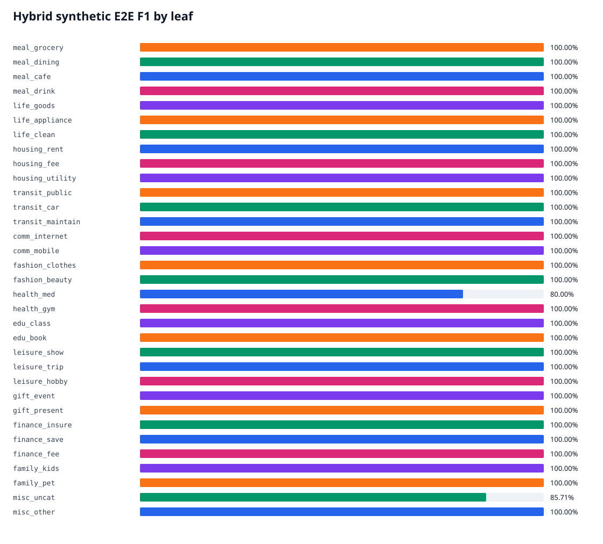
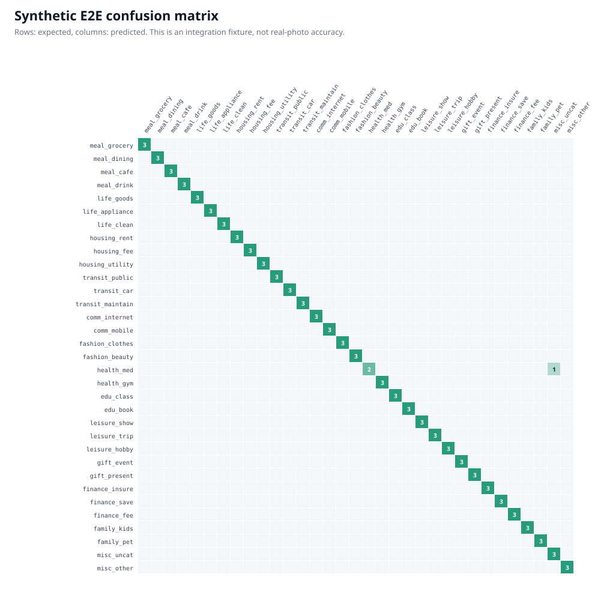
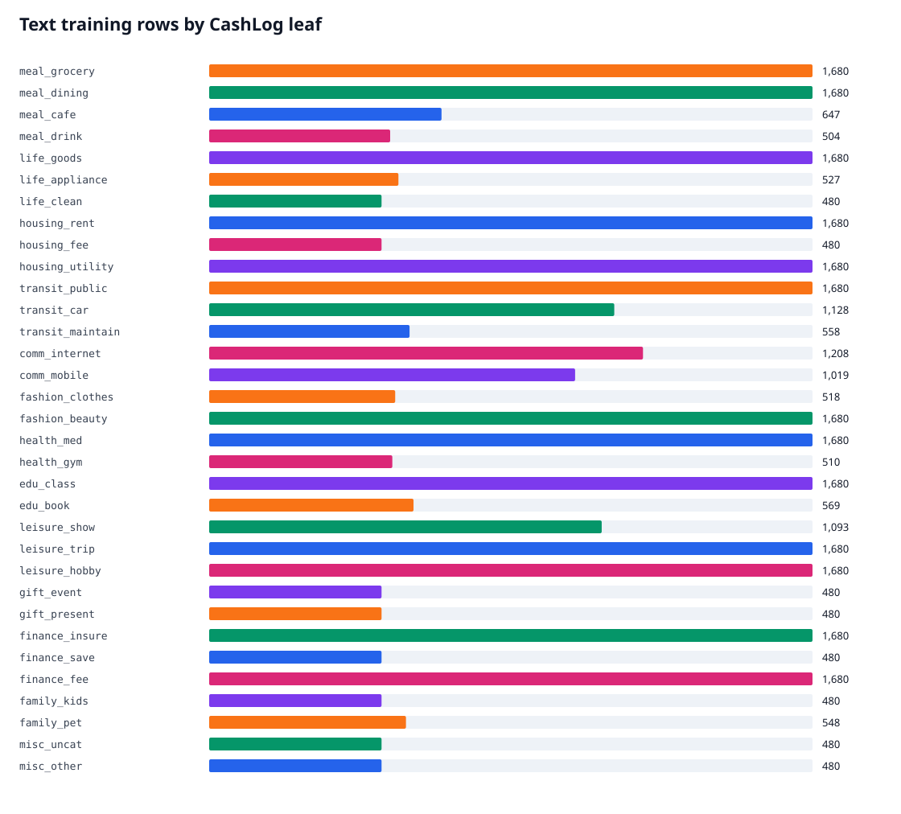

Decision
The candidate is available for guarded Top-3 recommendation. It is not production-accuracy certified because a frozen real-photo holdout is missing. Automatic confirmation remains disabled.
Measured Results
| Candidate | Scope | Top-1 | Top-3 |
|---|---|---|---|
| Vision zero-shot | Open Images proxy, 23 leaves | 59.76% | 70.73% |
| Vision linear head | Same proxy split, 23 leaves | 79.27% | 93.90% |
| Serving hybrid | Mac runtime, fixed Noto fixtures, 33 leaves | 98.99% | 98.99% |
| Airflow candidate | Linux runtime, same fixtures, 33 leaves | 98.99% | 98.99% |

Promotion Gates
| Gate | Result | Actual | Required | Scope |
|---|---|---|---|---|
| taxonomy_leaf_count | PASS | 33 | 33 | contract |
| artifact_sha256 | PASS | True | True | supply-chain |
| vision_head_beats_zero_shot_top1 | PASS | 0.7926829268292683 | > 0.5975609756097561 | Open Images proxy |
| synthetic_33_leaf_coverage | PASS | 33 | 33 | synthetic I/O |
| synthetic_top3 | PASS | 0.98989898989899 | >= 0.90 | synthetic I/O |
| synthetic_false_auto_confirm | PASS | 0.0 | <= 0.02 | synthetic I/O |
| synthetic_latency_p95 | PASS | 0.37764707116875773 | <= 3.0 | local CPU synthetic I/O |
| real_cashlog_holdout | FAIL | missing | frozen manual set: >=10 photos x 33 leaves | real holdout |
Per-Class Evidence


Data Coverage
34,509 text rows cover all 33 leaves. Open Images contributes 411 license-traceable visual proxy images across 23 leaves. Synthetic evidence is explicitly separated from real-photo evidence.

Architecture and Operations
SigLIP2 + learned visual head + Korean RapidOCR + TF-IDF SGD + deterministic lexicon, followed by weighted fusion and an unreadable-input fallback. Airflow isolates each candidate, MLflow records runs and artifacts, Jenkins triggers and monitors the DAG without a Docker socket.
The complete methodology, I/O contract, source checksums, failures, limitations, and all 33 labels are in REPORT.md. The exact run timeline and remaining operator actions are in ml_docs/CASHLOG33_RUN_LOG.md.